Gestione scheda tecnica
La scheda tecnica contiene le informazioni necessarie per la produzione
di un composto. Si compone di materiali (materie prime e semilavorati)
e di un ciclo di lavorazione (composto da una fase o più fasi).
La scheda tecnica rappresenta un’entità distinta rispetto al prodotto
finito e questo consente di gestire:
più schede tecniche attive contemporaneamente per
lo stesso prodotto finito; ad esempio una scheda tecnica con ciclo
interno (che rappresenta la scheda di default) ed una scheda alternativa
con ciclo esterno (vedere paragrafo relativo alla gestione delle alternative)
le revisioni della stessa scheda tecnica
più prodotti finiti simili che utilizzano la stessa
identica scheda tecnica (con ricarichi di produzione distinti)
più prodotti finiti simili che utilizzano la stessa
scheda tecnica ma che possono utilizzare materiali diversi in funzione
del prodotto finito finale (vedere paragrafo relativo ai segnaposto)
Per ogni composto (costituiti da articolo ed eventuale variante) viene
creata una associazione alla scheda tecnica di produzione con assegnazione
della data di inizio validità. Tale associazione è valida fino a che non
verrà cambiata l’associazione fra prodotto e scheda tecnica.
La scheda tecnica una volta creata e resa definitiva può essere modificata
solo fino a quando i prodotti associati non saranno movimentati in produzione
dando origine a RDP; in questo caso dovrà essere creata una revisione
della scheda stessa.
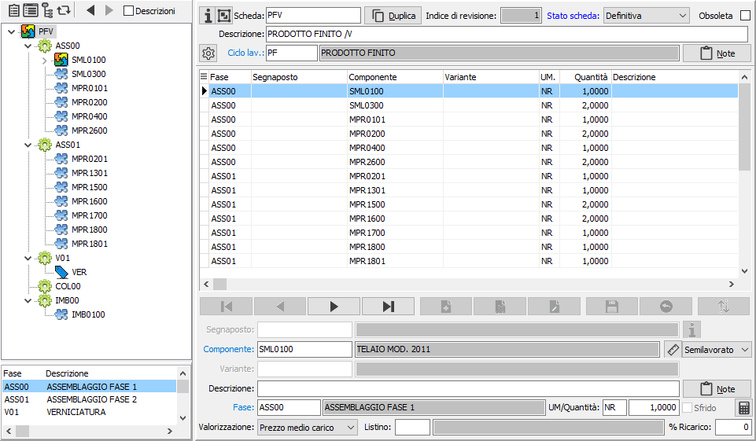
La finestra di gestione dati si presenta suddivisa in due sezioni verticali
ognuna a sua volta divisa in due sezioni orizzontali contenenti informazioni
specifiche, che analizziamo in dettaglio:
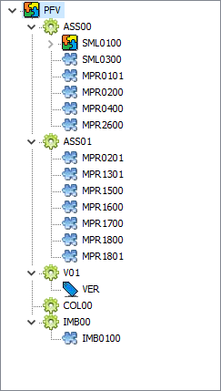
sulla sinistra
è presente una sezione superiore dove viene riportata in forma grafica
la composizione della scheda; i vari elementi che compongono la struttura
appaiono con immagini diverse in modo da distinguere semilavorati, materie
prime aggregati e segnaposto; ogni elemento viene visualizzato sotto la
fase di lavorazione a cui è stato assegnato. Con il doppio clic del mouse,
sugli elementi preceduti dal simbolo '+' è possibile scomporre ulteriormente
la struttura dell'elemento. Sopra la struttura grafica
è presente una barra di pulsanti che sono utilizzati per funzioni di utilità
esposte più avanti e per spostarsi tra le schede tecniche che sono state
richiamate, tramite l'apposito pulsante, in sequenza; apponendo la spunta
a "Descrizioni" saranno mostrate nella struttura anche le descrizioni
degli elementi presenti.
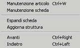
Le funzioni dei pulsanti
sono attivabili anche tramite il bottone destro del mouse, che richiama
il menù contestuale. Le funzioni dei pulsanti, e di conseguenza del menù
sono le seguenti (da sinistra a destra):
consente
di accedere alla manutenzione del prodotto se selezionato nella
struttura grafica (CTRL+W);
consente
di accedere alla manutenzione della scheda tecnica se selezionato
nella struttura grafica un semilavorato;
espansione
completa, nella struttura grafica, dei componenti semilavorati,
delle fasi e degli aggregati presenti nella scheda corrente;
aggiornamento
della struttura grafica;
Avanti
e Indietro consentono di spostarsi fra le schede richiamate tramite
la funzione "Manutenzione scheda".
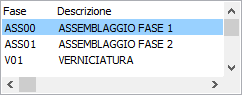
Sotto la struttura compaiono le fasi di lavorazione
facenti parte del ciclo assegnato; in fase di inserimento o variazione
della scheda facendo doppio clic con il mouse su di una delle fasi di
lavorazioni, questa viene assegnata al componente selezionato nella parte
destra, se non ha già una fase assegnata, altrimenti viene richiesta conferma
per la sostituzione della fase.
La parte destra è quella tramite cui effettuare l'inserimento e la manutenzione
dei dati; la parte superiore contiene i dati di testa della scheda tecnica.
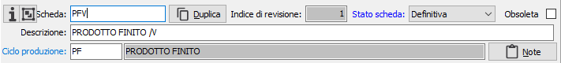
Ciascuna scheda ha un proprio codice ed un indice di revisione. Al momento
in cui viene preparata lo stato della scheda è provvisorio e non può essere
associato a nessun composto; al momento in cui lo stato viene impostato
a definitivo la scheda può essere associata ad uno o più composti; fino
a che questa operazione non è stata fatta comunque la scheda è ancora
modificabile; sono inoltre presenti i campi relativi alla descrizione,
al ciclo di produzione da associare, eventuali note accessibili tramite
il relativo bottone e l'indicazione di obsoleto.
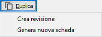
Come detto in precedenza la scheda che viene resa
definitiva non è più modificabile, ma è necessario creare una nuova revisione;
il pulsante Duplica permette questa funzionalità creando una copia identica
della scheda selezionata incrementando l'indice di revisione ed assegnando
lo stato a "In preparazione"; inoltre consente di poter generare
una nuova scheda del tutto uguale a quella selezionata, sarà solo necessario
assegnare un nuovo codice per concludere l'inserimento. Ovviamente sarà
sempre possibile inserire una scheda tecnica completamente nuova utilizzando
il tasto Nuovo presente sulla Toolbar.
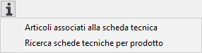
Alla sinistra del codice è presente un pulsante che
consente una duplice funzionalità: la visualizzazione dei prodotti associa
alla scheda corrente e la ricerca di una scheda tecnica in base
ad un prodotto.
La visualizzazione dei prodotti assegnati alla scheda mostra in una
finestra i prodotti o prodotti/varianti associati alla data odierna.
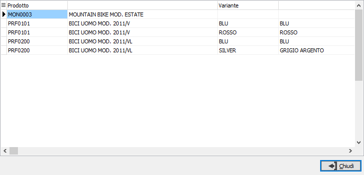
La ricerca di una scheda in base al prodotto visualizza una finestra
in cui inserire il prodotto per cui si desidera effettuare la ricerca;
premendo il pulsante Ricerca saranno visualizzate nella griglia sottostante
le schede a cui il prodotto è associato. Volendo accedere ad una delle
schede trovate è sufficiente selezionarla nella griglia e premere il pulsante
Seleziona.
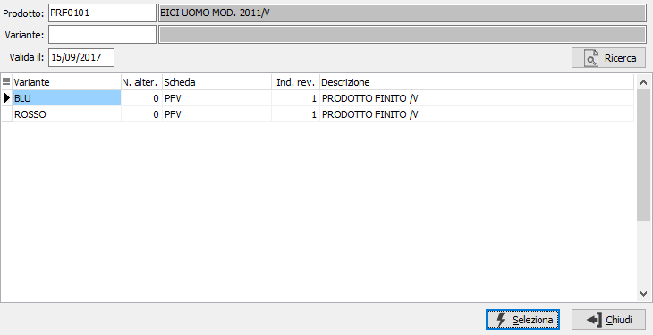
 L'altro pulsante presente alla sinistra del codice
consente di accedere alla procedura di associazione prodotti; vengono
richiesti dei parametri di selezione relativi ai prodotti da considerare
per impostare l'associazione alla scheda tecnica e tramite la pressione
del pulsante esegui si accede direttamente alla pagina Risultati dell'assegnazione prodotti con i prodotti selezionati
già assegnati alla scheda tecnica da cui si è partiti.
L'altro pulsante presente alla sinistra del codice
consente di accedere alla procedura di associazione prodotti; vengono
richiesti dei parametri di selezione relativi ai prodotti da considerare
per impostare l'associazione alla scheda tecnica e tramite la pressione
del pulsante esegui si accede direttamente alla pagina Risultati dell'assegnazione prodotti con i prodotti selezionati
già assegnati alla scheda tecnica da cui si è partiti.
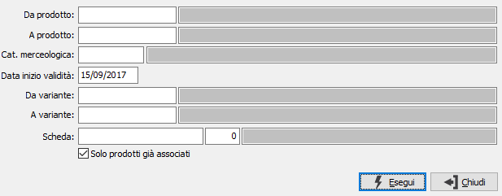
Il pulsante accanto al ciclo di lavorazione consente
di avviare la funzione di assegnazione componenti; il pulsante è attivo
in browse e per schede tecniche provvisorie o assegnate a prodotti non
movimentati. La finestra di associazione mostra a sinistra le fasi del
ciclo ed a destra l'elenco dei componenti assegnati e da assegnare relativamente
alla fase su cui si è posizionati; la procedura consente di assegnare
e disassegnare fasi, spostare componenti da una fase all'altra, singoli
o a gruppi, anche tramite trascinamento (drag&drop); non sarà possibile
salvare le variazioni apportate se rimangono componenti da assegnare.
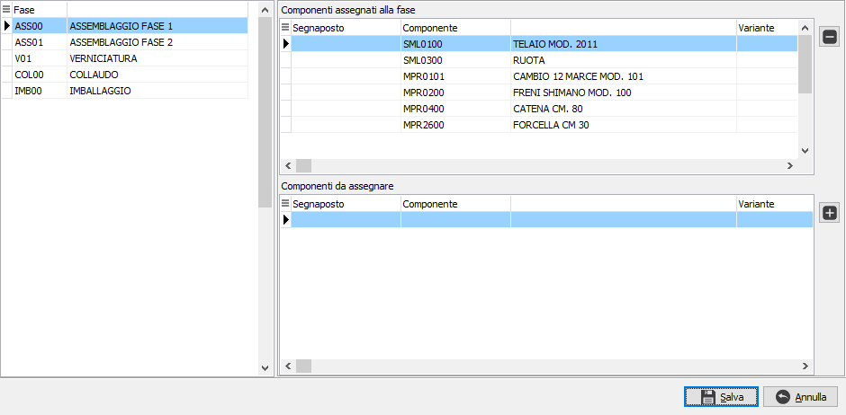
La parte sottostante è dedicata all'inserimento dei componenti e delle
fasi; la scheda tecnica può contenere un numero illimitato di componenti
e di livelli; se attiva la gestione dei segnaposto sarà possibile inserire
un segnaposto al posto di un componente.
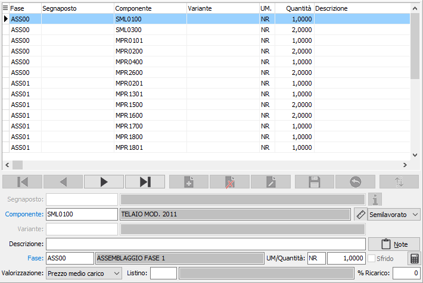
I componenti presenti all’interno della scheda tecnica possono essere
di due tipi:
materie
prime: si tratta di componenti che non hanno scheda tecnica associata
semilavorati:
si tratta di componenti per i quali esiste l’associazione ad una scheda
tecnica. A sua volta il semilavorato può essere utilizzato in tre
diverse modalità:
Semilavorato:
è la modalità normale ed il semilavorato ha una propria scheda
tecnica con relativo ciclo di produzione; nel caso in cui
la produzione del padre determini il fabbisogno di semilavorato
viene generato un ODP per la quantità necessaria.
Aggregato:
in questo caso la scheda tecnica associata non ha un ciclo
di produzione (e quindi non viene generato nessun ODP) ed
i componenti indicati nella scheda dell’aggregato si vanno
a sostituire al codice dell’aggregato stesso in fase di generazione
elenco componenti dell’ODP del composto in cui l’aggregato
compare.
Materia
prima: anche se il componente ha una propria scheda tecnica
questa viene ignorata e il componente segue l’iter delle materie
prime e quindi deve essere acquistato.
Se è configurata la gestione delle schede tecniche con formulazione
su base 100, la sezione video dei componenti mostra dei campi aggiuntivi
che sono: quantità occorrente, quantità ricorrente (ogni) e percentuale.
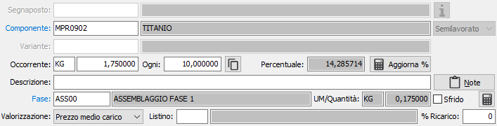
Il pulsante presente a destra del campo "Ogni" consente di
assegnare il valore ai componenti della stessa tipologia.
Con questa gestione i componenti sono legati dalla tipologia presente
sull'unità di misura e tramite la percentuale, che viene calcolata al
salvataggio della scheda o su pressione del pulsante "Aggiorna %",
viene assegnata la quantità da utilizzare per il componente. Il calcolo
viene effettuato utilizzando i valori presenti sui componenti che hanno
la stessa tipologia di unità di misura; l'iter di calcolo della percentuale
è il seguente:
- Viene
calcolato il totale dei componenti rapportato all’unità di misura
con coefficiente 1 e relativo ad una unità con la seguente formula:
(quantità occorrente / quantità ricorrente) * coefficiente UM
- Su ogni
componente della tipologia viene calcolata la percentuale con la seguente
formula: (((quantità occorrente / quantità ricorrente) * 100) / Totale)
* coefficiente UM
- Su ogni
componente viene poi assegnato il campo Quantita con la seguente formula:
((Totale * percentuale) / 100) / coefficiente UM
Per ogni gruppo di tipologia di unità di misura viene controllato che
il totale delle percentuali calcolate sia 100, eventuali differenze in
più od in meno vengono assegnate alla percentuale più alta.
Ogni componente o segnaposto deve essere associato alla fase in cui
deve essere utilizzato durante il ciclo produttivo; per i componenti sono
presenti anche ii parametri relativi alla valorizzazione: tipo valorizzazione,
listino, percentuale di ricarico; questi parametri saranno utilizzati
in fase di valorizzazione preventiva e riportati all'interno dei componenti
degli ODL generati in fase di pianificazione; in base alla configurazione
potranno essere utilizzati anche per la valorizzazione dei versamenti.
 Nel caso sia presente un segnaposto sarà attivo il
pulsante Info che consente di visualizzare in una finestra per i prodotti
assegnati al segnaposto quale componente sarà sostituito al segnaposto
durante l'esplosione della scheda tecnica.
Nel caso sia presente un segnaposto sarà attivo il
pulsante Info che consente di visualizzare in una finestra per i prodotti
assegnati al segnaposto quale componente sarà sostituito al segnaposto
durante l'esplosione della scheda tecnica.
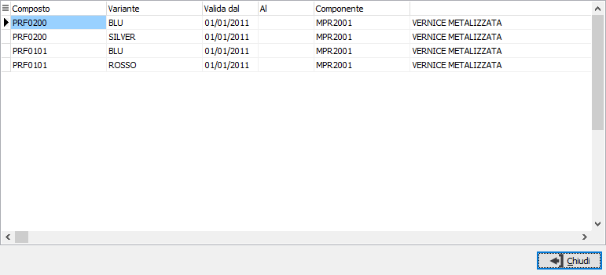
 è
possibile, tramite questo pulsante, applicare al fabbisogno base un eventuale
maggior consumo percentuale del componente. La percentuale viene applicata
al fabbisogno complessivo ed il valore calcolato può essere arrotondato
(per eccesso, per difetto, matematicamente) al numero di decimali indicati
sul componente stesso. Il pulsante cambia colore se è presente la percentuale
sul componente passando dal bianco al blu.
è
possibile, tramite questo pulsante, applicare al fabbisogno base un eventuale
maggior consumo percentuale del componente. La percentuale viene applicata
al fabbisogno complessivo ed il valore calcolato può essere arrotondato
(per eccesso, per difetto, matematicamente) al numero di decimali indicati
sul componente stesso. Il pulsante cambia colore se è presente la percentuale
sul componente passando dal bianco al blu.
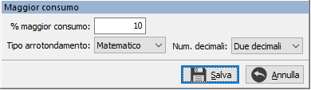
 Se
attiva la gestione misure prodotti, tramite questo pulsante, è possibile
accedere alla finestra di Gestione misure
in modo da utilizzare i dati per il calcolo della quantità. Il pulsante
consente anche di verificare visivamente se sono presenti dei dati relativi
alle misure in quanto appare in un colore diverso quando questi sono presenti.
Se
attiva la gestione misure prodotti, tramite questo pulsante, è possibile
accedere alla finestra di Gestione misure
in modo da utilizzare i dati per il calcolo della quantità. Il pulsante
consente anche di verificare visivamente se sono presenti dei dati relativi
alle misure in quanto appare in un colore diverso quando questi sono presenti.
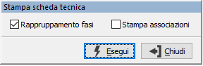
Tramite i pulsanti presenti nella Toolbar
sarà possibile effettuare la stampa della scheda tecnica; prima di effettuare
la stampa viene richiesto se si vuole effettuare il raggruppamento delle
fasi, di conseguenza stampare la scheda come struttura, oppure non raggruppare
i componenti per fase, ma stampare l'elenco con accanto la fase relativa;
inoltre è possibile stampare in coda alla scheda le associazioni esistenti
con i prodotti spuntando la casella 'Stampa associazioni'.